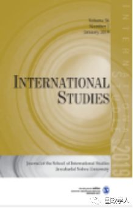
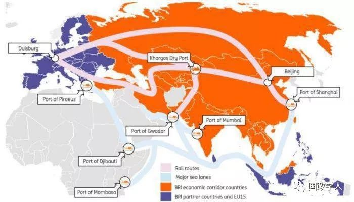

收录于合集

简 介
【作者】 Karine Lisbonne de Vergeron博士是全球政策研究所GPI欧洲项目副主任兼负责人。2006年，她与英国查塔姆研究所和法国罗伯特·舒曼基金会共同发起了几个关于非欧洲人对欧洲的观点的研究项目——中国人和印度人对欧洲的观点。主要兴趣领域为：法国的欧洲战略；欧洲防务合作，特别是英法防务条约；法德合作；欧洲对外事务与文化外交及其对欧洲一体化的意义。
【编译】 金 琳
【校对】 施 榕
【审核】 李 源
【来源】
Vergeron,K.L.de.(2018). The New Silk Roads: European PerceptionsandPerspectives.InternationalStudies,55(4),339– 349.https://doi.org/10.1177/0020881718812308
【期刊】 《国际研究》（International Studies）致力于探索和理解印度的外交政策、不结盟理论和实践以及第三世界国家的发展和安全问题。

新丝绸之路：来自欧洲的观点与视角
The New Silk Roads: European Perceptions and Perspectives
Karine Lisbonne de Vergeron
（来源：LSE官网）
内容提要
通过梳理官方出版物、学术研究、媒体报道和评论，并对欧洲政策制定者、学者和企业高管进行一系列深入采访，作者分析了欧洲对于“一带一路”的认识及其对欧亚发展战略的意义。
作者认为 “新丝绸之路”（ The New Silk Roads ）或 “一带一路”（B elt and Road Initiative ）既非一种正式的政策，也非一项明确的地缘政治战略。 “新丝绸之路”的提出深深植根于公元前2世纪至公元15世纪中欧之间贸易和文化交流的历史背景之中，因此作者认为“新丝绸之路”是由中国推动的一种不断演进的叙事（evolving narrative）。另外， “一带一路”的倡议正在逐渐成为中国在地区和全球层面推行其外交政策的工具，并且已经扩展到除欧亚大陆以外的非洲和拉丁美洲 。为了维护国内政治的稳定和社会的凝聚力，中国正在寻求进入更大的市场，特别是更加强调在战略和经济等方面进一步加深与亚洲邻国之间的关系。因此“一带一路”被中国学者认为是一项雄心勃勃的倡议，它将有助于中国扩大商品出口和国际投资、推动技术的国际化、促进中国中西部地区的经济发展以及加快人民币国际化的进程。而欧洲对于“新丝绸之路”的看法受到中欧双边关系重要性的变化、欧洲推动亚欧之间互联互通的规划以及欧洲的欧亚发展整体战略方针的影响。 作者认为，尽管 “一带一路”中的有些举措可能会破坏欧洲国家间的政治团结或投资规则，但是从长远来看，“一带一路”倡议使亚欧大陆间的距离成本明显下降，这将对中欧贸易沿线的全球价值链重组产生重大影响，进而使欧洲在合作中获益。

文章导读
**1
** 背景
自2013年中国国家主席习近平正式启动“丝绸之路经济带”和“海上丝绸之路”的建设以来，欧洲对“新丝绸之路”的认知逐渐形成。作者认为，尽管“一带一路”建设面临诸多挑战，但从长远看，如果中国成功地全面实施“一带一路”建设，必将对欧亚大陆经济社会关系产生重大影响，甚至重塑全球贸易格局。这对欧盟来说至关重要，因为欧盟仍旧是中国最大的贸易伙伴，占据中国2017年的贸易总额的15%。与此同时，中国是欧洲出口增长最快的市场之一，占欧盟对外贸易的15%。尽管亚洲国家是欧盟的主要贸易和投资伙伴，但20多年来，经济关系的深化仍然是影响中欧双边关系的决定性因素。
从 “一带一路”的整体来看，学者认为“一带一路”的全面推进将覆盖世界一半以上的人口和全球1/4的GDP。与此同时，越来越多的分析指出，“一带一路”可能成为世界两极化的开端，美国和中国这两个各自拥有基础设施网络的两极，可以同时拥有两套不同的规范和标准体系，即所谓的2.0两极分化（2.0 bipolarization）。然而，只有在“一带一路”在未来几年取得全面成功的情况下，这种设想才有可能实现。
尽管自2004年以来，欧盟就与中国建立了战略伙伴关系，但是由于欧盟内部的众多国家在与中国进行接触时主要是 采取双边协调的方式 ，而并非是通过欧盟机构。许多欧洲专家担心，欧洲在追求全球战略利益方面不够统一，而中国往往能够根据自己的利益在成员国之间进行挑拨对立。同时，欧洲核心企业在中国市场内的展开竞争将成为常态。
**2
** 欧洲观点
**
**
欧洲对于 “新丝绸之路”态度的形成主要受两个因素的影响： 第一，大多数欧洲国家的主要重点是直接从国家经济利益出发 支持 这一倡议， 而并非将其作为 一项共同的欧洲战略 加以考虑 。 具体来说，中国在欧洲地区的两个主要目标区域是:中东欧国家以及地中海地区。但是总体而言，欧盟各成员国长期以来的发展水平不同，导致各方对“一带一路”建设的承诺和态度不同。一些地方政府寻求从“一带一路”建设的契机中吸引中国投资并从中获益，或者直接与中国市场建立关系。此外，欧洲的大多数项目都涉及铁路连接，有些项目早在“一带一路”倡议正式启动之前就已存在。一些欧洲专家进一步认为，除了对港口基础设施的投资外，欧洲可能不会从“海上丝绸之路”中得到那么多好处，并且认为大部分的投资将流向中国承包商。实际上，有专家指出，“海上丝绸之路”计划实际上是中欧贸易的关键。目前大部分货物流通是通过经苏伊士运河进入地中海，最后到达欧洲。无论是从短期还是长期来看，欧盟成员国对“一带一路”的看法和中欧在开辟新航线上的合作将越来越多地依赖于三个不同的层面的合作质量和强度：欧盟层面、国家层面、区域和地方层面，以及如何将这三个层面与一个更大的欧洲共同计划联系起来。
第二， “一带一路”可能导致欧盟国家内部通过加大竞争来吸引中国投资，从而破坏欧洲的政治团结和投资规则，尤其是在西欧。欧洲成员国对“一带一路”建设的认识因基础设施建设和投资水平的不同而异，特别是在中东欧地区，中国将中东欧视为进入欧洲市场的门户。 显然，16+1模式（其中11个国家是欧盟的成员国）提供了鼓励和促进此类投资的框架。
然而，作者认为在所有这些问题上欧洲国家之间还有很大的政治协调空间。从欧盟中主要国家德国和法国的角度来看，“新丝绸之路”的全面成功最终将取决于中欧促进合作均衡、推动社会、环境、金融和反腐败规范以及知识产权等领域合作的能力。从国家层面来看，与中国在共建“一带一路”中进一步开展合作，有可能推动欧盟成员国间进行一定程度的协调。欧盟就“一带一路”倡议对欧洲国家在第三国的合作进行战略分析，确实具有重要意义。考虑到“一带一路”倡议在欧亚大陆不断演变的性质、范围和发展领域，需要欧洲采取更加灵活的方式，尤其是要具备在短期和中期进行调整的战略能力。
**3
** 结论
**2017 年之后，欧洲的看法由单一的国家性立场，逐渐演变为一种更加协调与统一的立场。**从长远看，“一带一路”倡议将使亚欧大陆之间的距离成本降低，并对中欧贸易沿线的全球价值链的重组产生重大影响。中国的跨国公司有望从良好的基础设施条件中受益匪浅，这将有助于它们进入欧洲市场。但从中长期来看，这也可能为欧洲企业带来重大机遇。 “ 新丝绸之路 ” 确实可以带来巨大的好处， 尤其是从其地缘战略的意义上， “新丝绸之路”将 成为世界上最大的单一陆路贸易路线 。 大陆强国通过陆路和铁路重新崛起，而不是主要通过海上力量 的 投射，这是一个巨大的转变。 然而，所有这一切都需要寻求在各层次的合作中最大限度地扩大欧洲的共同利益和战略，使中欧都能获得更大的利益。
_ ** _ 本文由国政学人微信平台独家编译首发**
更多阅读
【重磅速递】约瑟夫·奈：美国霸权的兴衰：从威尔逊到特朗普 | 国政学人
【重磅推荐】巴里·布赞：英国学派视角下的中国崛起 | 国政学人
【重磅速递】米尔斯海默：注定失败：自由主义国际秩序的兴衰 | 国政学人
【国际组织】IO杂志：联合国维和行动的武力运用问题研究 | 国政学人